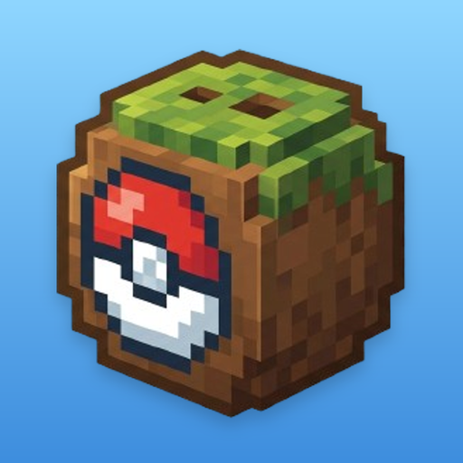

CocoLauncher iOS
Chơi Coco Cobblemon (Minecraft Java) trên iPhone/iPad
Đang đọc phiên bản…
Điều kiện
- Chỉ cần tên nhân vật (tài khoản Local), không cần đăng nhập Microsoft. Theo EULA của Minecraft, người chơi cần sở hữu Minecraft: Java Edition.
- Ngồi máy tính 1 lần để cài SideStore và tạo pairing (iloader).
- App LocalDevVPN (App Store) và StikDebug để bật JIT.
- Bản cài đã mở khoá RAM. Máy 8 GB (iPhone 15 Pro, 15 Pro Max, 16 trở lên): tối thiểu 3,5 GB, mượt 3,8–4 GB. Máy 6 GB (iPhone 13 Pro, 14, 15): 2,5 GB, cấu hình Thấp.
Cài đặt
Thêm nguồn Coco vào SideStoreSau đó vào SideStore › Browse › Coco Cobblemon › CocoLauncher › Install.
Cài thẳng bằng SideStore Tải file IPA (dùng với iloader › Import IPA)Địa chỉ nguồn: https://coconubs.github.io/CocoLauncher-iOS/source.json
Mỗi lần chơi
- Bật Wi-Fi, mở LocalDevVPN › Connect.
- Mở CocoLauncher, nhập tên nhân vật › CHƠI. App tự tải game (lần đầu) và mở StikDebug để bật JIT rồi quay lại.
- Multiplayer › Coco › gõ
/login.
Cứ 7 ngày: SideStore › My Apps › Refresh All. Hướng dẫn và lỗi thường gặp
Cần hỗ trợ?
Lỗi cài đặt, không vào được game, văng game: hỏi trên Discord Coco, gửi kèm ảnh chụp và file latestlog.txt (app Tệp › CocoLauncher).
Discord hỗ trợ Coco